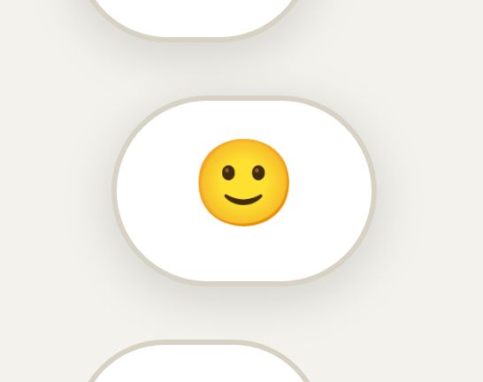
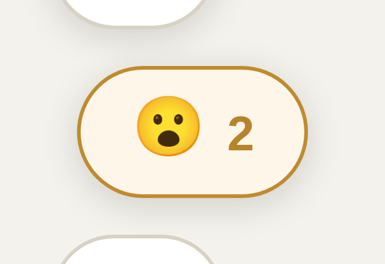

Your report, 29 July, from your phone with the console open: POST /archive-api/v0/card-react → 400, twice. You were right, and it was never only shorty pages.
The reaction endpoint keeps a list of the post types it will accept. That list was written for the hub feed's cards. But the standalone page renderer puts a react button on any page it serves — and tags it with that page's own type. So the button was drawn on pages whose type the endpoint had never been told about, and every tap was refused.
One line, four surfaces. The same list broke all of these on live — the button renders, the tap is rejected:
| Page | Type it sends | Tap | Reactions already stored |
|---|---|---|---|
| /shorty/… | shorty | 400 | 22 on 6 posts |
| /event/… | event | 400 | 28 on 9 posts |
| /document/… | document | 400 | 15 on 3 posts |
| /sponsors/… | sponsor-page | 400 | 0 |
The same list also guards the read side. So those pages did not just refuse new reactions — they showed no count at all for the ones already there.
Real reactions members had already left, sitting in the database, invisible on the very page they belong to. Nothing is lost — they reappear.
These are real taps on the real button on a real dev2 shorty page — the reaction control, then the 😮 in the picker. Same tap both times. The only thing that changes is which version of the endpoint answers it.

Still grey, still the neutral face, still no number. The reaction was thrown away.

Your reaction is in, and the button lights up. The 2 is your reaction plus the one from April that this page had never shown you.
Same account, same post, same emoji:
400
{"ok":false,"error":"bad_request"}
The tap is thrown away. Nothing is stored, and the strip shows no count.
200
{"ok":true,"counts":{"ouch":1,"wow":1}}
The reaction is stored — and the ouch from April, hidden until now, comes back with it.
That ouch is not a test value. It is a real reaction left on that post on 26 April by another member, which the page has never once displayed.
Four names added to one list, plus the matching list on the "who reacted" endpoint so a reaction you can leave is also one you can read back. Nothing else — no change to how reactions are stored, counted, or notified.
And a build check now fails if the renderer ever learns a new page type that the endpoint has not been told about — so this cannot come back quietly.
At phone width the reaction button sits underneath the bottom tab bar. Not a near miss: about 32 of its 36 pixels are covered, leaving a 4-pixel sliver to hit. That is why it feels unresponsive even when nothing is broken.
This one is on live too. The button is pinned 18px from the bottom of the screen on a stacking layer of 50; the tab bar sits on layer 2147481000. The tab bar wins, always. Live runs the identical stylesheet and the identical tab-bar file — I checked both, byte for byte.
Measured in a browser on dev2. I have not measured it on your actual phone, so the exact pixel count there may differ — but the layering is not a matter of opinion.
I have not fixed it, deliberately. Moving that button is a look-and-feel decision — does it sit above the tab bar, or move up out of its way? — and that is yours, not mine to bury inside a one-line fix. Say which and it becomes its own small job.